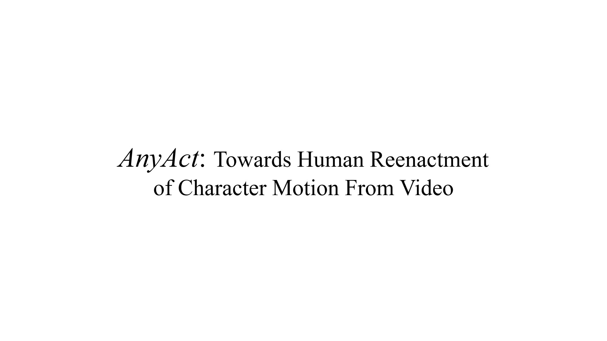
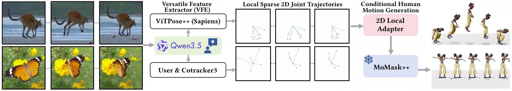
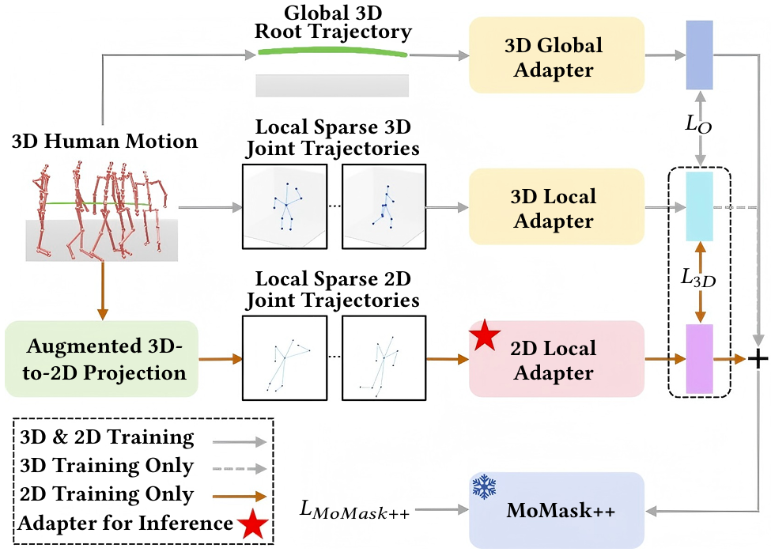
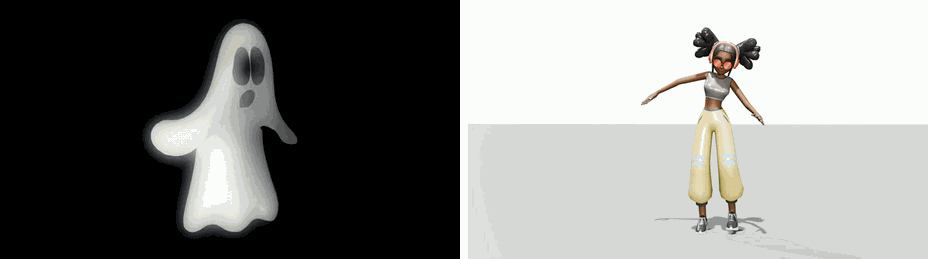
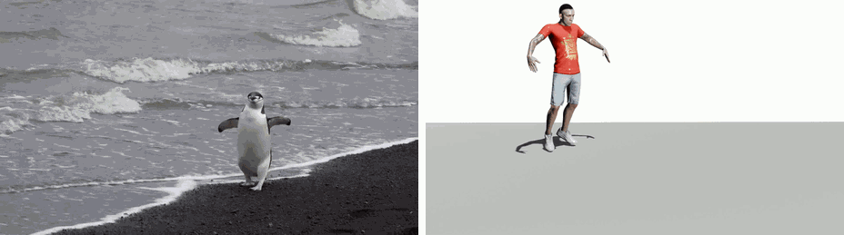
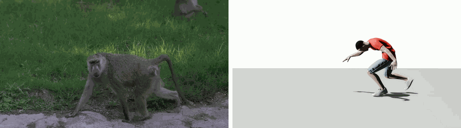
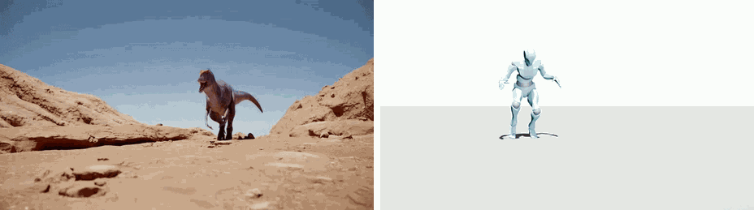
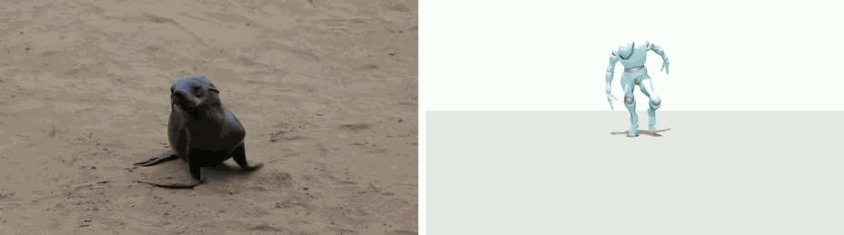
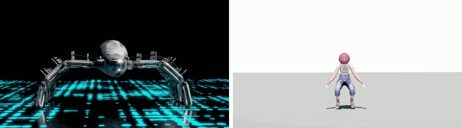
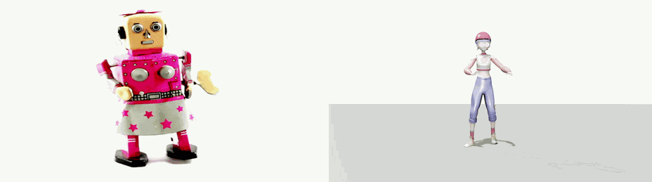

AnyAct: Towards Human Reenactment of Character Motion From Video
arXiv 2026

Watch full videoWhat is AnyAct?
AnyAct reenacts human motion from arbitrary character videos. It converts sparse 2D motion cues from animals, cartoons, objects, and stylized characters into plausible 3D human motions that preserve the source action semantics.
Given monocular videos of non-human characters with diverse topologies, AnyAct reinterprets their characteristic motion patterns as plausible human performances rather than reproducing their source structures literally. Shown here are reenactments of (a) kangaroo-like jumping, (b) butterfly-like wing flapping, and (c) the periodic paw motion of a beckoning cat.
Butterfly-like wing flapping

The periodic paw motion of a beckoning cat

Method Overview

Given reference videos of characters, AnyAct first extracts local sparse 2D joint trajectories as transferable motion cues from the input video using our model-ensemble-based Versatile Feature Extractor (VFE). These cues are then injected into a human motion generator (MoMask++) through the ControlNet-like 2D Local Adapter (2D-LA) to produce the initial human reenactments that follow the observed character dynamics.
Motion Condition Learning

We learn reliable motion control for our AnyAct using only human motion data. This is achieved by our proposed augmented 3D-to-2D projection for providing paired supervision, progressive 3D-to-2D training to alleviate conditioning ambiguity, and global-local motion decoupling for suppressing unreliable global root motion.
More Results
Each example shows the reference video on the left and the corresponding generated 3D human motion on the right.
Ghost dance

Deer walk

Penguin walk

Monkey walk

Dinosaur walk

Seal walk

Monster jump

Robot walk

Citation
@article{chen2026anyact,
title={AnyAct: Towards Human Reenactment of Character Motion From Video},
author={Chen, Liuhan and Zhong, Lei and Wang, Jiewei and Shuai, Qin and Yuan, Li and Fan, Leidong and Li, Qing and Liu, Kanglin},
journal={arXiv preprint arXiv:2605.15497},
year={2026}
}